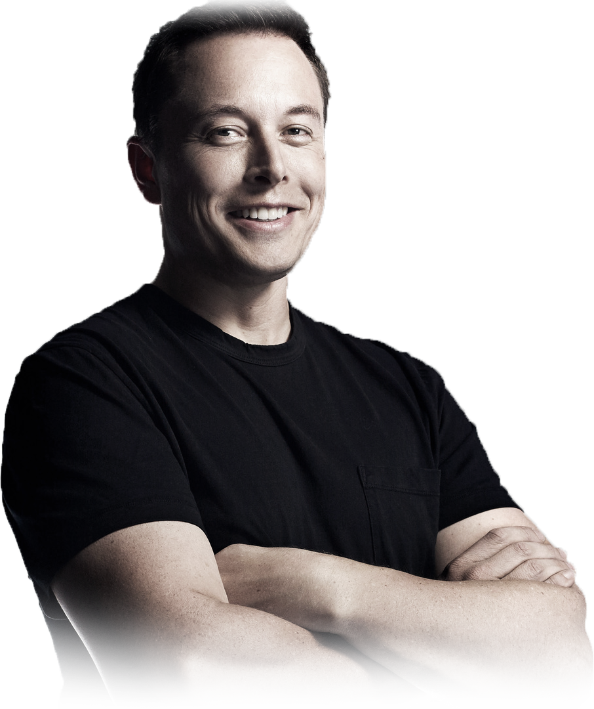

Elon Musk
A man with a vision.

Business magnate, inventor, industrial designer, and engineer.
1971 - Born in Pretoria, South Africa.1981 - At the age of 10, he developed an interest in computing with the Commodore VIC-20 and taught himself computer programming.1983 - By the age of 12, Musk sold the code of a BASIC-based video game he created called Blastar, to a magazine called PC and Office Technology, for approximately $500.1989 - Moved to Canada to attend Queen's University.1992 - Went to University of Pennsylvania to Study Business and Physics.1995 - Musk and his brother, Kimbal, started Zip2, a web software company which developed and marketed an Internet city guide for the newspaper publishing industry. The company raised money from a small group of angel investors.1999 - Compaq acquired Zip2 for US$307 million in cash and US$34 million in stock options in February 1999. Musk received US$22 million for his 7 percent share from the sale.2001 - Musk conceptualized Mars Oasis, a project to land a miniature experimental greenhouse on Mars, containing food crops growing on Martian regolith, in an attempt to regain public interest in space exploration.2002 - Musk founded Space Exploration Technologies, or SpaceX, in May 2002 with US$100 million of his early fortune. Musk became the chief executive officer (CEO) and chief technology officer (CTO). SpaceX develops and manufactures space launch vehicles with a focus on advancing the state of rocket technology.2004 - Musk led the Series A round of investment for Tesla in February 2004, joined Tesla's board of directors as its chairman.2007 - Following the financial crisis in 2008 and after a series of escalating conflicts in 2007, Eberhard was ousted from the firm. Musk assumed leadership of the company as CEO and product architect.2011 - In July 2011, the Musk Foundation donated US$250,000 towards a solar power project in Sōma, Japan, a city that had been recently devastated by a tsunami.2013 - On August 12, 2013, Musk unveiled a concept for a high-speed transportation system incorporating reduced-pressure tubes in which pressurized capsules ride on an air cushion driven by linear induction motors and air compressors. The mechanism for releasing the concept was an alpha-design document that, in addition to scoping out the technology, outlined a notional route where such a transport system might be built: between the Greater Los Angeles Area and the San Francisco Bay Area.2015 - Musk donated US$10 million to the Future of Life Institute in January 2015, to run a global research program aimed at keeping artificial intelligence beneficial to humanity.2016 - In September 2016, Musk revealed details of his architecture to explore and colonize Mars.2018 - In October 2018, in an effort to help solve the Flint water crisis, Musk and the Musk Foundation donated over $480,000 to install new water fountains with filtration systems for access to clean water at all Flint, Michigan schools.2019 - In January 2019, Musk traveled to China for the groundbreaking of Tesla's Shanghai Gigafactory, which is the company's first large-scale plant outside the U.S. Part of his visit to China, Musk also met the Chinese premier Li Keqiang. During their exchange, Musk confessed his love for China and wished he could visit China more often, to which the Chinese premier was quoted as saying "We can issue you a Chinese green card if that helps."
"When something is important enough, you do it even if the odds are not in your favor."